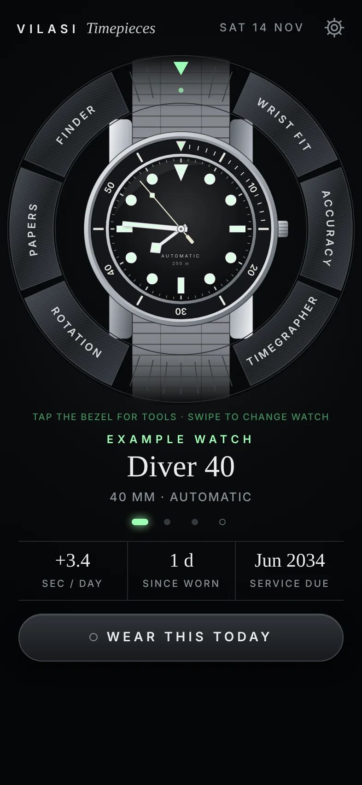
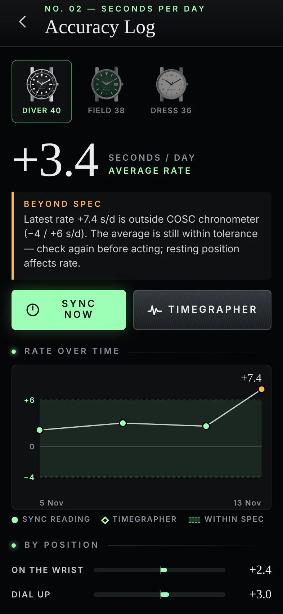
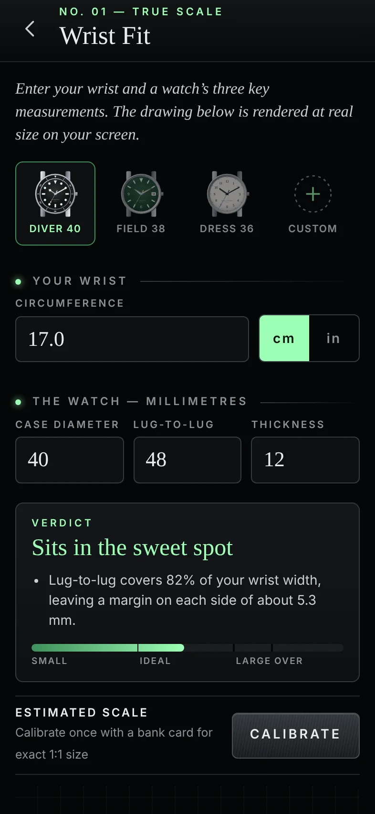
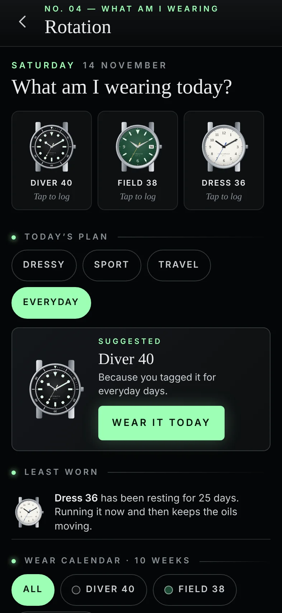

Know your watches to the second.
Vilasi Timepieces is a workshop for people who wear mechanical watches. It checks how a watch fits your wrist, how well it keeps time and when it is due for service.
Coming to the App StoreFor iPhone.

No. 01 · Wrist fit
See a watch at its real size before you buy
Enter your wrist and three case measurements. The watch is drawn on screen at true physical scale, calibrated once with a bank card, with a plain verdict on whether the lugs overhang.

No. 02 · Accuracy log
Seconds per day, tracked properly
Tap to sync against your phone’s clock, then again a day later. The log charts each watch’s rate over time, by position, and flags a movement that drifts outside its specification.
- Rate chart with the tolerance band drawn in
- Readings on the wrist, dial up, crown down
- A timegrapher that listens to the movement through the microphone
No. 04 · Rotation
What am I wearing today?
Log a wear in one tap. A ten-week calendar shows which watches earn their place, which one has been resting too long, and a suggestion for the day you have planned.

The dial is the menu
Every watch drawn from its own details
The home screen is a live dial showing the real time, drawn from the case, dial and hands you entered. Swipe between watches. Tap the bezel to open a tool.
Built for owners, not for selling
Private
No account, no ads, no analytics in the app. Your collection, prices and papers stay on your phone.
Microphone
The timegrapher analyses sound live to measure beat rate. Audio is never recorded or stored.
Independent
Not affiliated with any watch brand. Brand names belong to their owners.